2023年北京市中考数学真题 原卷解析
2023年北京市中考数学试卷
考生须知
1.本试卷共6页，共两部分，三道大题，28道小题．满分100分．考试时间120分钟．
2.在试卷和草稿纸上准确填写姓名、准考证号、考场号和座位号．
3.试题答案一律填涂或书写在答题卡上，在试卷上作答无效．
4在答题卡上，选择题、作图题用2B铅笔作答，其他试题用黑色字迹签字笔作答．
5.考试结束，将本试卷、答题卡和草稿纸一并交回．
第一部分 选择题
一、选择题（共16分，每题2分）
第1—8题均有四个选项，符合题意的选项只有一个．
1. 截至2023年6月11日17时，全国冬小麦收款2.39亿亩，进度过七成半，将239000000用科学记数法表示应为（ ）
A.  B.
B.  C.
C.  D.
D. 
【答案】B
【解析】
【分析】用科学记数法表示绝对值较大的数时，一般形式为 ，其中
，其中
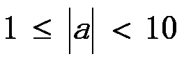
， 为整数，且比原来的整数位数少1，据此判断即可．
为整数，且比原来的整数位数少1，据此判断即可．【详解】解：
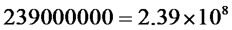
，故选：B．
【点睛】本题考查了科学记数法的表示方法，用科学记数法表示绝对值较大的数时，一般形式为，其中，为整数，且比原来的整数位数少1，解题的关键是要正确确定 和的值．
和的值．
2. 下列图形中，既是轴对称图形又是中心对称图形的是（ ）
A.
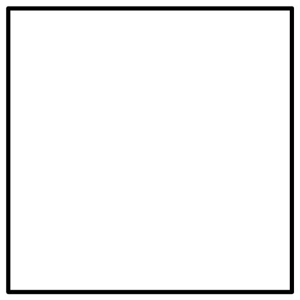
B. 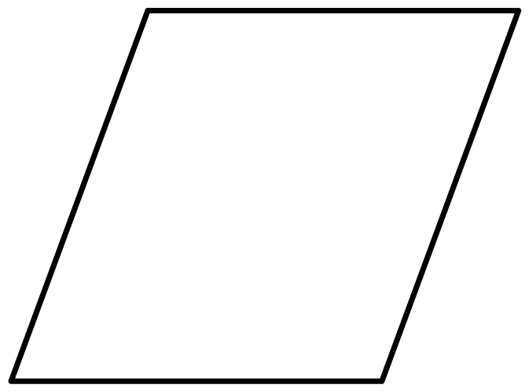
C.  D.
D. 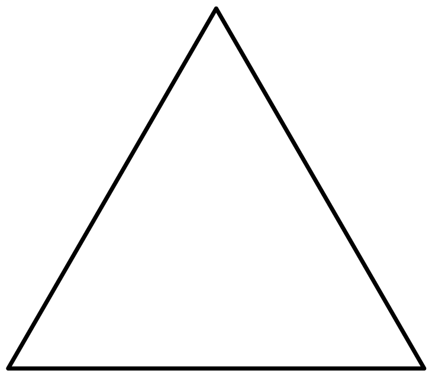
【答案】A
【解析】
【分析】根据轴对称图形，中心对称图形的定义进行判断即可．
【详解】解：A既是轴对称图形又是中心对称图形，故符合要求；
B不是轴对称图形，是中心对称图形，故不符合要求；
C
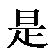
轴对称图形，不是中心对称图形，故不符合要求；D是轴对称图形，不是中心对称图形，故不符合要求；
故选：A．
【点睛】本题考查了轴对称图形，中心对称图形，解题的关键在于熟练掌握：在平面内，把一个图形绕着某个点旋转 ，如果旋转后的图形能与原来的图形重合，那么这个图形叫做中心对称图形；在平面内，一个图形沿一条直线折叠，直线两旁的部分能够完全重合的图形叫做轴对称图形．
，如果旋转后的图形能与原来的图形重合，那么这个图形叫做中心对称图形；在平面内，一个图形沿一条直线折叠，直线两旁的部分能够完全重合的图形叫做轴对称图形．
3. 如图， ，
， ，则
，则 的大小为（ ）
的大小为（ ）

A.  B.
B.  C.
C.  D.
D. 
【答案】C
【解析】
【分析】由，
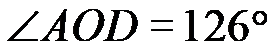
，可求出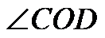
的度数，再根据角与角之间的关系求解．【详解】∵
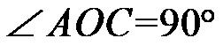
，，∴
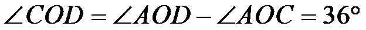
，∵
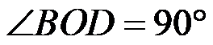
，∴
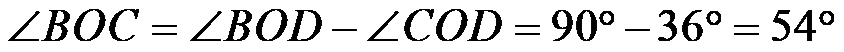
．故选：C．
【点睛】本题考查的知识点是角的计算，注意此题的解题技巧：两个直角相加和
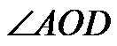
相比，多加了．4. 已知 ，则下列结论正确的是（ ）
，则下列结论正确的是（ ）
A.  B.
B. 
C
 D.
D. 
【答案】B
【解析】
【分析】由可得
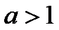
，则 ，根据不等式的性质求解即可．
，根据不等式的性质求解即可．【详解】解：得，则，
∴
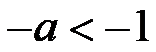
，∴
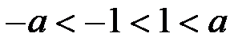
，故选：B．
【点睛】本题考查了不等式的性质，注意：当不等式两边同时乘以一个负数，则不等式的符号需要改变．
5. 若关于 的一元二次方程
的一元二次方程 有两个相等的实数根，则实数
有两个相等的实数根，则实数 的值为（ ）
的值为（ ）
A.  B.
B.  C.
C.  D. 9
D. 9
【答案】C
【解析】
【分析】根据一元二次方程有两个相等的实数根，可得
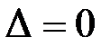
，进而即可求解．【详解】解：∵关于的一元二次方程有两个相等的实数根，
∴
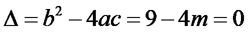
．解得：
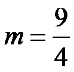
．故选：C．
【点睛】本题考查了一元二次方程
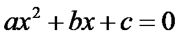
(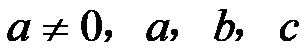
为常数)的根的判别式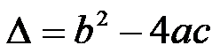
，理解根的判别式对应的根的三种情况是解题的关键．当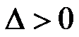
时，方程有两个不相等的实数根；当时，方程有两个相等的实数根；当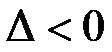
时，方程没有实数根．6. 十二边形的外角和为（ ）
A.
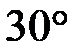
B. 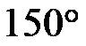
C. 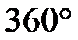
D. 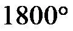
【答案】C
【解析】
【分析】根据多边形的外角和为360°进行解答即可．
【详解】解：∵多边形的外角和为360°
∴十二边形的外角和是360°．
故选：C．
【点睛】本题考查多边形的内角和与外角和的求法，掌握多边形的外角和为360°是解题的关键．
7. 先后两次抛掷同一枚质地均匀的硬币，则第一次正面向上、第二次反面向上的概率是（ ）
A.  B.
B.  C.
C.  D.
D. 
【答案】A
【解析】
【分析】整个实验分两步完成，每步有两个等可能结果，用列表法或树状图工具辅助处理．
【详解】
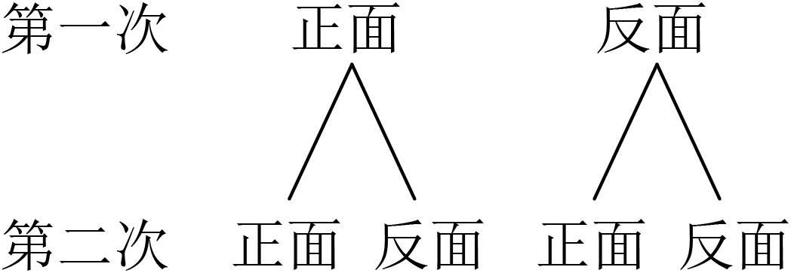
如图，所有结果有4种，满足要求的结果有1种，故概率为.
故选：A
【点睛】本题考查概率的计算，运用树状图或列表工具是解题的关键．
8. 如图，点A、B、C在同一条线上，点B在点A，C之间，点D，E在直线AC同侧，，
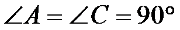
，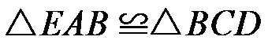
，连接DE，设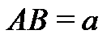
，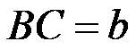
，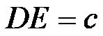
，给出下面三个结论：①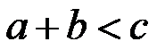
；②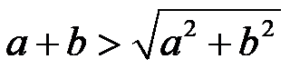
；③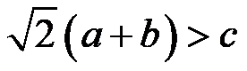
；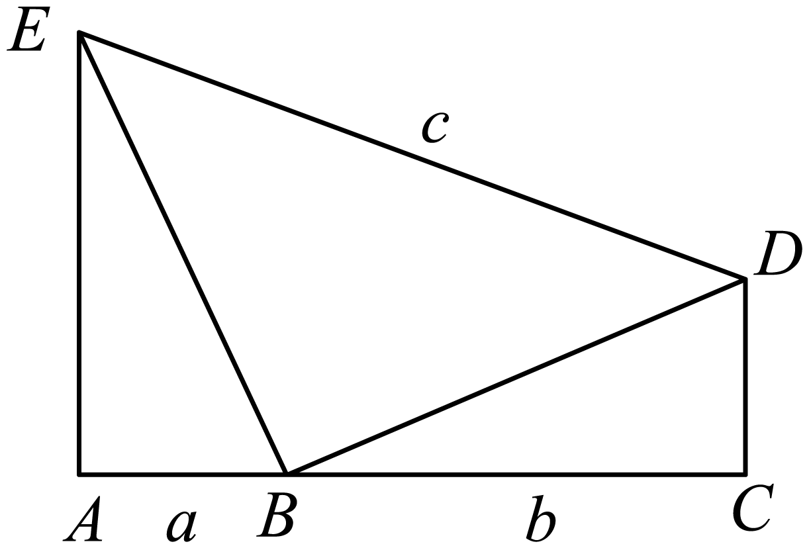
上述结论中，所有正确结论的序号是（ ）
A. ①②B. ①③C. ②③D. ①②③
【答案】D
【解析】
【分析】如图，过 作于
作于 ，则四边形是矩形，则
，则四边形是矩形，则
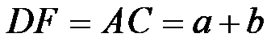
，由，可得，进而可判断①的正误；由，可得，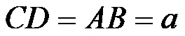
，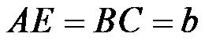
，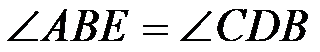
，则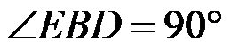
，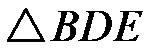
是等腰直角三角形，由勾股定理得，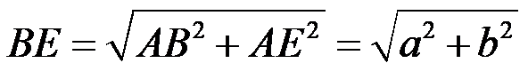
，由，可得，进而可判断②的正误；由勾股定理得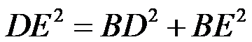
，即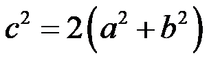
，则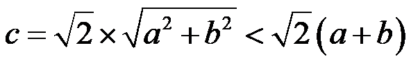
，进而可判断③的正误．【详解】解：如图，过作于，则四边形是矩形，
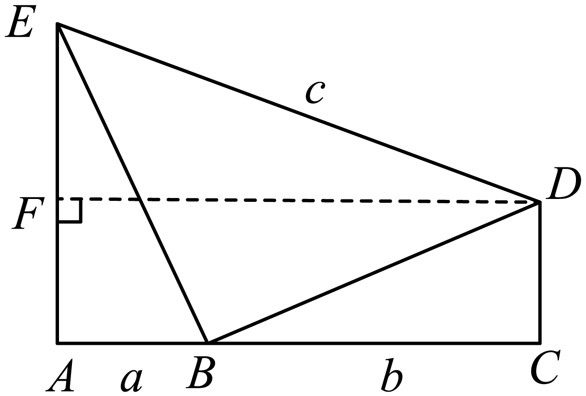
∴，
∵，
∴，①正确，故符合要求；
∵，
∴，，，，
∵
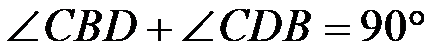
，∴，，
∴是等腰直角三角形，
由勾股定理得，，
∵，
∴，②正确，故符合要求；
由勾股定理得，即，
∴，③正确，故符合要求；
故选：D．
【点睛】本题考查了矩形的判定与性质，全等三角形的性质，勾股定理，等腰三角形的判定，不等式的性质，三角形的三边关系等知识．解题的关键在于对知识的熟练掌握与灵活运用．
第二部分 非选择题
二、填空题（共16分，每题2分）
9. 若代数式有意义，则实数x的取值范围是______．
【答案】
【解析】
【分析】根据分式有意义的条件列不等式求解即可．
【详解】解：若代数式有意义，则，
解得：，
故答案为：．
【点睛】本题考查了分式有意义的条件，熟知分式有意义，分母不为零是解题的关键．
10. 分解因式：=__________________.
【答案】
【解析】
【详解】试题分析：原式提公因式得：y（x2-y2）=
考点：分解因式
点评：本题难度中等，主要考查学生对多项式提公因式分解因式等知识点的掌握．需要运用平方差公式．
11. 方程的解为______．
【答案】
【解析】
【分析】方程两边同时乘以化为整式方程，解整式方程即可，最后要检验．
【详解】解：方程两边同时乘以，得，
解得：，
经检验，是原方程的解，
故答案为：．
【点睛】本题考查了解分式方程，熟练掌握解分式方程的步骤是解题的关键．
12. 在平面直角坐标系 中，若函数
中，若函数 的图象经过点和，则m的值为______．
的图象经过点和，则m的值为______．
【答案】3
【解析】
【分析】先把点A坐标代入求出反比例函数解析式，再把点B代入即可求出m的值．
【详解】解：∵函数的图象经过点和
∴把点代入得，
∴反比例函数解析式为，
把点代入得：，
解得：，
故答案为：3．
【点睛】本题考查了待定系数法求反比例函数解析式，反比例函数图象上点的坐标特征，熟知反比例函数图象上的点的坐标一定满足函数解析式是解题的关键．
13. 某厂生产了1000只灯泡.为了解这1000只灯泡的使用寿命，从中随机抽取了50只灯泡进行检测，获得了它们的使用寿命（单位：小时），数据整理如下：
根据以上数据，估计这1000只灯泡中使用寿命不小于2200小时的灯泡的数量为______只．
【答案】460
【解析】
【分析】用1000乘以抽查的灯泡中使用寿命不小于2200小时的灯泡所占的比例即可．
【详解】解：估计这1000只灯泡中使用寿命不小于2200小时的灯泡的数量为（只），
故答案为：460．
【点睛】本题考查了用样本估计总体，用样本估计总体时，样本容量越大，样本对总体的估计也就越精确．
14. 如图，直线AD，BC交于点O，.若，，.则的值为______．
【答案】
【解析】
【分析】由平行线分线段成比例可得，，，得出，，从而.
【详解】， ，，
，
，
，
，
；
故答案为：.
【点睛】本题考查了平行线分线段成比例的知识点，根据平行线分线段成比例找出线段之间的关系是解决本题的关键.
15. 如图， 是
是 的半径，
的半径， 是的弦，于点D，
是的弦，于点D， 是的切线，交
是的切线，交 的延长线于点E．若，，则线段的长为______．
的延长线于点E．若，，则线段的长为______．
【答案】
【解析】
【分析】根据，得出，，根据等腰直角三角形的性质得出，即，根据，，得出为等腰直角三角形，即可得出．
【详解】解：∵，
∴，．
∵，
∴为等腰直角三角形，
∴，
∴．
∵是的切线，
∴，
∵，
∴为等腰直角三角形，
∴．
故答案为：．
【点睛】本题主要考查了垂径定理，等腰直角三角形的判定和性质，切线的性质，解题的关键是熟练掌握垂径定理，得出．
16. 学校组织学生参加木艺艺术品加工劳动实践活动．已知某木艺艺术品加工完成共需A，B，C，D，E，F，G七道工序，加工要求如下：
①工序C，D须在工序A完成后进行，工序E须在工序B，D都完成后进行，工序F须在工序C，D都完成后进行；
②一道工序只能由一名学生完成，此工序完成后该学生才能进行其他工序；
③各道工序所需时间如下表所示：
在不考虑其他因素的前提下，若由一名学生单独完成此木艺艺术品的加工，则需要______分钟；若由两名学生合作完成此木艺艺术品的加工，则最少需要______分钟．
【答案】 ①. 53 ②. 28
【解析】
【分析】将所有工序需要的时间相加即可得出由一名学生单独完成需要的时间；假设这两名学生为甲、乙，根据加工要求可知甲学生做工序A，乙学生同时做工序B；然后甲学生做工序D，乙学生同时做工序C，乙学生工序C完成后接着做工序G；最后甲学生做工序E，乙学生同时做工序F，然后可得答案．
【详解】解：由题意得：（分钟），
即由一名学生单独完成此木艺艺术品的加工，需要53分钟；
假设这两名学生为甲、乙，
∵工序C，D须在工序A完成后进行，工序E须在工序B，D都完成后进行，且工序A，B都需要9分钟完成，
∴甲学生做工序A，乙学生同时做工序B，需要9分钟，
然后甲学生做工序D，乙学生同时做工序C，乙学生工序C完成后接着做工序G，需要9分钟，
最后甲学生做工序E，乙学生同时做工序F，需要10分钟，
∴若由两名学生合作完成此木艺艺术品的加工，最少需要（分钟），
故答案为：53，28；
【点睛】本题考查了逻辑推理与时间统筹，根据加工要求得出加工顺序是解题的关键．
三、解答题（共68分，第17—19题，每题5分，第20—21题，每题6分，第22—23题，每题5分，第24题6分，第25题5分，第26题6分；第27—28题，每题7分）解答应写出文字说明、演算步骤或证明过程.
17. 计算：．
【答案】
【解析】
【分析】代入特殊角三角函数值，利用负整数指数幂，绝对值和二次根式的性质化简，然后计算即可．
【详解】解：原式
 ．
．
【点睛】本题考查了实数的混合运算，牢记特殊角三角函数值，熟练掌握负整数指数幂，绝对值和二次根式的性质是解题的关键．
18. 解不答式组：．
【答案】
【解析】
【分析】分别求出每一个不等式的解集，根据口诀：同大取大、同小取小、大小小大中间找、大大小小找不到确定不等式组的解集．
【详解】
解不等式①得：
解不等式②得：
 不等式的解集为：
不等式的解集为：
【点睛】本题考查了解一元一次不等式组，正确掌握一元一次不等式解集确定方法是解题的关键．
19. 已知，求代数式的值．
【答案】2
【解析】
【分析】先将分式进行化简，再将变形整体代入化简好的分式计算即可．
【详解】解：原式，
由可得，
将代入原式可得，原式．
【点睛】本题考查了分式 化简求值，注意整体代入思想的应用．
化简求值，注意整体代入思想的应用．
20. 如图，在 中，点E，F分别在，
中，点E，F分别在， 上，
上， ，
， ．
．

（1）求证：四边形 是矩形；
是矩形；
（2） ，
， ，
， ，求的长．
，求的长．
【答案】（1）见解析 （2）
【解析】
【分析】（1）利用平行四边形的性质求出 ，证明四边形是平行四边形，然后根据对角线相等的平行四边形是矩形得出结论；
，证明四边形是平行四边形，然后根据对角线相等的平行四边形是矩形得出结论；
（2）证明 是等腰直角三角形，可得
是等腰直角三角形，可得 ，然后再解直角三角形求出
，然后再解直角三角形求出 即可．
即可．
【小问1详解】
证明：∵四边形 是平行四边形，
是平行四边形，
∴ ，
， ，
，
∵，
∴，
∴四边形是平行四边形，
∵，
∴平行四边形是矩形；
【小问2详解】
解：由（1）知四边形是矩形，
∴ ，
，
∵，，
∴是等腰直角三角形，
∴ ，
，
又∵ ，
，
∴ ，
，
∴ ，
，
∴ ．
．
【点睛】本题考查了平行四边形的判定和性质，矩形的判定和性质以及解直角三角形，熟练掌握相关判定定理和性质定理是解题的关键．
21. 对联是中华传统文化的瑰宝，对联装裱后，如图所示，上、下空白处分别称为天头和地头，左、右空白处统称为边．一般情况下，天头长与地头长的比是，左、右边的宽相等，均为天头长与地头长的和的．某人要装裱一幅对联，对联的长为，宽为．若要求装裱后的长是装裱后的宽的4倍，求边的宽和天头长．（书法作品选自《启功法书》）
【答案】边的宽为，天头长为
【解析】
【分析】设天头长为，则地头长为，边的宽为，再分别表示础装裱后的长和宽，根据装裱后的长是装裱后的宽的4倍列方程求解即可．
【详解】解：设天头长为，
由题意天头长与地头长的比是，可知地头长为，
边的宽为，
装裱后的长为，
装裱后的宽为，
由题意可得：
解得，
∴，
答：边的宽为，天头长为．
【点睛】本题考查了一元一次方程的应用，题中的数量关系较为复杂，需要合理设未知数，找准数量关系．
22. 在平面直角坐标系中，函数 的图象经过点和，与过点且平行于x轴的线交于点C．
的图象经过点和，与过点且平行于x轴的线交于点C．
（1）求该函数的解析式及点C的坐标；
（2）当时，对于x的每一个值，函数的值大于函数的值且小于4，直接写出n的值．
【答案】（1），；
（2）．
【解析】
【分析】（1）利用待定系数法可求出函数解析式，由题意知点C的纵坐标为4，代入函数解析式求出点C的横坐标即可；
（2）根据函数图象得出当过点时满足题意，代入求出n的值即可．
【小问1详解】
解：把点，代入得：，
解得：，
∴该函数的解析式为，
由题意知点C的纵坐标为4，
当时，
解得：，
∴；
【小问2详解】
解：由（1）知：当时，，
因为当时，函数的值大于函数的值且小于4，
所以如图所示，当过点时满足题意，
代入得：，
解得：．
【点睛】本题考查了一次函数的图象和性质，待定系数法的应用，一次函数图象上点的坐标特征，利用数形结合的思想是解题的关键．
23. 某校舞蹈队共16名学生，测量并获取了所有学生的身高（单位：cm），数据整理如下：
a.16名学生的身高：
161，162，162，164，165，165，165，166，
166，167，168，168，170，172，172，175
b.16名学生的身高的平均数、中位数、众数：
（1）写出表中m，n的值；
（2）对于不同组的学生，如果一组学生的身高的方差越小，则认为该组舞台呈现效果越好．据此推断：在下列两组学生中，舞台呈现效果更好的是______（填“甲组”或“乙组”）；
甲组学生的身高 | 162 | 165 | 165 | 166 | 166 |
乙组学生的身高 | 161 | 162 | 164 | 165 | 175 |
（3）该舞蹈队要选五名学生参加比赛．已确定三名学生参赛，他们的身高分别为168，168，172，他们的身高的方差为．在选另外两名学生时，首先要求所选的两名学生与已确定的三名学生所组成的五名学生的身高的方差小于，其次要求所选的两名学生与已确定的三名学生所组成的五名学生的身高的平均数尽可能大，则选出的另外两名学生的身高分别为______和______．
【答案】（1），；
（2）甲组 （3）170， 172
【解析】
【分析】（1）根据中位数和众数的定义求解即可；
（2）计算每一组的方差，根据方差越小数据越稳定进行判断即可；
（3）根据要求，身高的平均数尽可能大且方差小于，结合其余学生的身高即可做出选择．
【小问1详解】
解：将这组数据按照从小到大的顺序排列为：161，162，162，164，165，165，165，166，166，167，168，168，170，172，172，175，
出现次数最多的数是165，出现了3次，即众数，
16个数据中的第8和第9个数据分别是166，166，
∴中位数，
∴，；
【小问2详解】
解：甲组身高的平均数为，
甲组身高的方差为
乙组身高的平均数为，
乙组身高的方差为，
∵
∴舞台呈现效果更好的是甲组，
故答案为：甲组；
【小问3详解】
解：168，168，172的平均数为
∵所选的两名学生与已确定的三名学生所组成的五名学生的身高的方差小于，
∴数据的差别较小，数据才稳定，
可供选择的有：170， 172，
且选择170， 172时，平均数会增大，
故答案为：170， 172．
【点睛】本题考查了平均数、众数、中位数和方差，熟记方差的计算公式以及方差的意义：方差越小数据越稳定是解题的关键．
24. 如图，圆内接四边形的对角线 ，
， 交于点
交于点 ，平分，．
，平分，．
（1）求证 平分，并求的大小；
平分，并求的大小；
（2）过点 作交
作交 的延长线于点．若，，求此圆半径的长．
的延长线于点．若，，求此圆半径的长．
【答案】（1）见解析，
（2）
【解析】
【分析】（1）根据已知得出，则，即可证明平分，进而根据平分，得出，推出，得出是直径，进而可得；
（2）根据（1）的结论结合已知条件得出，，是等边三角形，进而得出，由是直径，根据含度角的直角三角形的性质可得，在中，根据含度角的直角三角形的性质求得的长，进而即可求解．
【小问1详解】
解：∵
∴，
∴，即 平分．
平分．
∵平分，
∴，
∴，
∴，即，
∴是直径，
∴；
【小问2详解】
解：∵，，
∴，则．
∵，
∴．
∵，
∴，
∴是等边三角形，则．
∵平分，
∴．
∵是直径，
∴，则．
∵四边形是圆内接四边形，
∴，则，
∴，
∴，
∴．
∵，
∴，
∴．
∵是直径，
∴此圆半径的长为．
【点睛】本题考查了弧与圆周角的关系，等弧所对的圆周角相等，直径所对的圆周角是直角，含度角的直角三角形的性质，等边三角形的性质与判定，圆内接四边形对角互补，熟练掌握以上知识是解题的关键．
25. 某小组研究了清洗某种含污物品的节约用水策略．部分内容如下．
每次清洗1个单位质量的该种含污物品，清洗前的清洁度均为0.800要求清洗后的清洁度为0.990
方案一：采用一次清洗的方式．
结果：当用水量为19个单位质量时，清洗后测得的清洁度为0.990．
方案二：采用两次清洗的方式．
记第一次用水量为个单位质量，第二次用水量为个单位质量，总用水量为个单位质量，两次清洗后测得的清洁度为C．记录的部分实验数据如下：
| 11.0 | 9.0 | 9.0 | 7.0 | 5.5 | 4.5 | 3.5 | 3.0 | 3.0 | 2.0 | 1.0 |
| 0.8 | 1.0 | 1.3 | 1.9 | 2.6 | 3.2 | 4.3 | 40 | 5.0 | 7.1 | 11.5 |
| 11.8 | 10.0 | 10.3 | 8.9 | 8.1 | 7.7 | 7.8 | 7.0 | 8.0 | 9.1 | 12.5 |
C | 0.990 | 0.989 | 0.990 | 0.990 | 0.990 | 0.990 | 0.990 | 0.988 | 0.990 | 0.990 | 0.990 |
对以上实验数据进行分析，补充完成以下内容．
（Ⅰ）选出C是0.990的所有数据组，并划“√”；
（Ⅱ）通过分析（Ⅰ）中选出的数据，发现可以用函数刻画第一次用水量和总用水量之间的关系，在平面直角坐标系中画出此函数的图象；
结果：结合实验数据，利用所画的函数图象可以推断，当第一次用水量约为______个单位质量（精确到个位）时，总用水量最小．
根据以上实验数据和结果，解决下列问题：
（1）当采用两次清洗的方式并使总用水量最小时，与采用一次清洗的方式相比、可节水约______个单位质量（结果保留小数点后一位）；
（2）当采用两次清洗的方式时，若第一次用水量为6个单位质量，总用水量为7.5个单位质量，则清洗后的清洁度C______0.990（填“>”“=”或“<”）．
【答案】（Ⅰ）见解析；（Ⅱ）见解析，4；（1）11.3；（2）<
【解析】
【分析】（Ⅰ）直接在表格中标记即可；
（Ⅱ）根据表格中数据描点连线即可做出函数图象，再结合函数图象找到最低点，可得第一次用水量约为4个单位质量时，总用水量最小；
（1）根据表格可得，用两次清洗的方式并使总用水量最小时，用水量为7.7个单位质量，计算即可；
（2）根据表格可得当第一次用水量为6个单位质量，总用水量超过8个单位质量，则清洗后的清洁度能达到0.990，若总用水量为7.5个单位质量，则清洁度达不到0.990．
【详解】（Ⅰ）表格如下：
| 11.0 | 9.0 | 9.0 | 7.0 | 5.5 | 4.5 | 3.5 | 3.0 | 3.0 | 2.0 | 1.0 |
| 0.8 | 1.0 | 1.3 | 1.9 | 2.6 | 3.2 | 4.3 | 4.0 | 5.0 | 7.1 | 11.5 |
| 11.8 | 10.0 | 10.3 | 8.9 | 8.1 | 7.7 | 7.8 | 7.0 | 8.0 | 9.1 | 12.5 |
C | 0.990 √ | 0.989 | 0.990 √ | 0.990 √ | 0.990 √ | 0.990 √ | 0.990 √ | 0.988 | 0.990 √ | 0.990 √ | 0.990 √ |
（Ⅱ）函数图象如下：
由图象可得，当第一次用水量约为4个单位质量（精确到个位）时，总用水量最小；
（1）当采用两次清洗的方式并使总用水量最小时，用水量为7.7个单位质量，
19-7.7=11.3，
即可节水约11.3个单位质量；
（2）由图可得，当第一次用水量为6个单位质量，总用水量超过8个单位质量，则清洗后的清洁度能达到0.990，
第一次用水量为6个单位质量，总用水量为7.5个单位质量，则清洗后的清洁度，
故答案为：<．
【点睛】本题考查了函数图象，根据数据描绘函数图象、从函数图象获取信息是解题的关键．
26. 在平面直角坐标系中， ，
， 是抛物线
是抛物线 上任意两点，设抛物线的对称轴为
上任意两点，设抛物线的对称轴为 ．
．
（1）若对于 ，
， 有
有 ，求
，求 的值；
的值；
（2）若对于 ，
， ，都有
，都有 ，求的取值范围．
，求的取值范围．
【答案】（1）
（2）
【解析】
【分析】（1）根据二次函数的性质求得对称轴即可求解；
（2）根据题意可得 离对称轴更近，
离对称轴更近， ，则与
，则与 的中点在对称轴的右侧，根据对称性求得
的中点在对称轴的右侧，根据对称性求得 ，进而根据
，进而根据 ，即可求解．
，即可求解．
【小问1详解】
解：∵对于，有，
∴抛物线的对称轴为直线 ，
，
∵抛物线的对称轴为．
∴；
【小问2详解】
解：∵当，，
∴，，
∵，，
∴离对称轴更近，，则与的中点在对称轴的右侧，
∴，
即．
【点睛】本题考查了二次函数的性质，熟练掌握二次函数的对称性是解题的关键．
27. 在 中、
中、 ，
， 于点M，D是线段
于点M，D是线段 上的动点（不与点M，C重合），将线段
上的动点（不与点M，C重合），将线段 绕点D顺时针旋转
绕点D顺时针旋转 得到线段
得到线段 ．
．

（1）如图1，当点E在线段上时，求证：D是的中点；
（2）如图2，若在线段 上存在点F（不与点B，M重合）满足
上存在点F（不与点B，M重合）满足 ，连接，
，连接， ，直接写出
，直接写出 的大小，并证明．
的大小，并证明．
【答案】（1）见解析 （2） ，证明见解析
，证明见解析
【解析】
【分析】（1）由旋转的性质得 ，
， ，利用三角形外角的性质求出
，利用三角形外角的性质求出 ，可得
，可得 ，等量代换得到
，等量代换得到 即可；
即可；
（2）延长 到H使
到H使 ，连接
，连接 ，
， ，可得是
，可得是 的中位线，然后求出
的中位线，然后求出 ，设
，设 ，
， ，求出
，求出 ，证明
，证明 ，得到
，得到 ，再根据等腰三角形三线合一证明
，再根据等腰三角形三线合一证明 即可．
即可．
【小问1详解】
证明：由旋转的性质得：，，
∵ ，
，
∴ ，
，
∴ ，
，
∴，
∴，即D是中点；
【小问2详解】
；
证明：如图2，延长到H使，连接，，
∵，
∴是的中位线，
∴ ，
， ，
，
由旋转的性质得：，，
∴ ，
，
∵ ，
，
∴ ，是等腰三角形，
，是等腰三角形，
∴， ，
，
设，，则 ，
， ，
，
∴ ，
，
∴ ，
，
∵，
∴ ，
，
∴ ，
，
∴ ，
，
在 和
和 中，
中， ，
，
∴，
∴，
∵，
∴，即．
 【点睛】本题考查了等腰三角形的判定和性质，旋转的性质，三角形外角的性质，三角形中位线定理以及全等三角形的判定和性质等知识，作出合适的辅助线，构造出全等三角形是解题的关键．
【点睛】本题考查了等腰三角形的判定和性质，旋转的性质，三角形外角的性质，三角形中位线定理以及全等三角形的判定和性质等知识，作出合适的辅助线，构造出全等三角形是解题的关键．
28. 在平面直角坐标系中，的半径为1．对于的弦和外一点C给出如下定义：
若直线 ，
， 中一条经过点O，另一条是的切线，则称点C是弦的“关联点”．
中一条经过点O，另一条是的切线，则称点C是弦的“关联点”．

（1）如图，点 ，
， ，
，
①在点 ，
， ，
， 中，弦
中，弦 的“关联点”是______．
的“关联点”是______．
②若点C是弦 的“关联点”，直接写出的长；
的“关联点”，直接写出的长；
（2）已知点 ，
， ．对于线段
．对于线段 上一点S，存在的弦
上一点S，存在的弦 ，使得点S是弦的“关联点”，记的长为t，当点S在线段上运动时，直接写出t的取值范围．
，使得点S是弦的“关联点”，记的长为t，当点S在线段上运动时，直接写出t的取值范围．
【答案】（1） ，
， ；
；
（2）或．
【解析】
【分析】（1）根据题目中关联点的定义并分情况讨论计算即可；
（2）根据，两点来求最值情况，S共有2种情况，分别位于点M和经过点O的的垂直平分线上，运用相似三角形计算即可．
【小问1详解】
解：①由关联点的定义可知，若直线中一经过点O，另一条是的切线，则称点C是弦的“关联点”，
∵点，，，，，
∴直线经过点O，且与相切，
∴是弦的“关联点”，
又∵和横坐标相等，与都位于直线上，
∴与相切，经过点O，
∴是弦的“关联点”．
②∵，，
设，如下图所示，共有两种情况，
a、若与相切，经过点O，
则、所在直线为： ，
解得：，
∴，
b、若与相切，经过点O，
则、所在直线为：，
解得：，
∴，
综上，．
【小问2详解】
解：∵线段上一点S，存在的弦，使得点S是弦的“关联点”，
又∵弦随着S的变动在一定范围内变动，且，，，
∴S共有2种情况，分别位于点M和经过点O的的垂直平分线上，如图所示，
①当S位于点时，为的切线，作，
∵，的半径为1，且为的切线，
∴，
∵，
∴，
∴，即，
解得，
∴根据勾股定理得，，
根据勾股定理，，同理，，
∴当S位于点时，的临界值为和．
②当S位于经过点O的的垂直平分线上即点K时，
∵点，，
∴，
∴，
又∵的半径为1，∴，
∴三角形为等边三角形，
∴在此情况下，，，
∴当S位于经过点O的的垂直平分线上即点K时，的临界值为 和，
和，
∴在两种情况下，的最小值在内，最大值在，
综上所述，t的取值范围为或，
【点睛】本题主要考查最值问题，题目较为新颖，要灵活运用知识点，明确新概念时解答此题的关键．